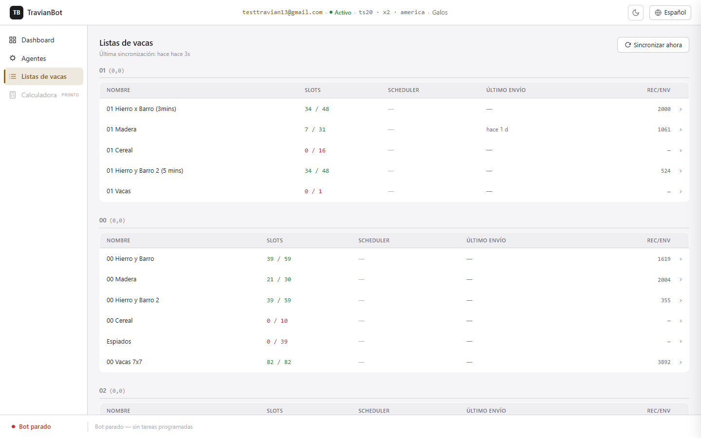
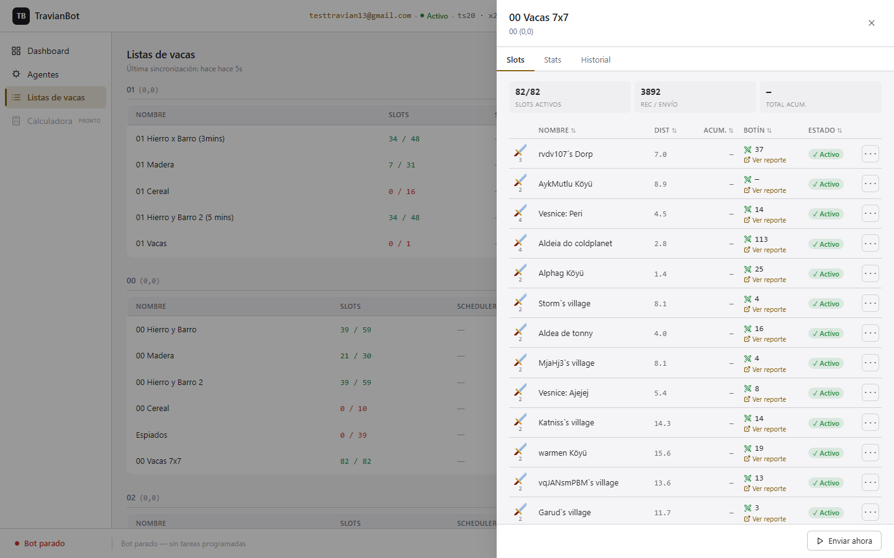
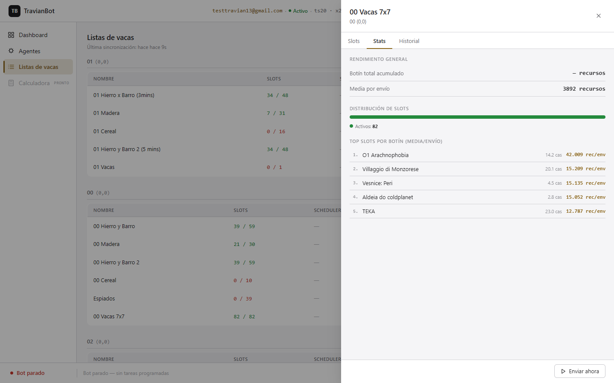
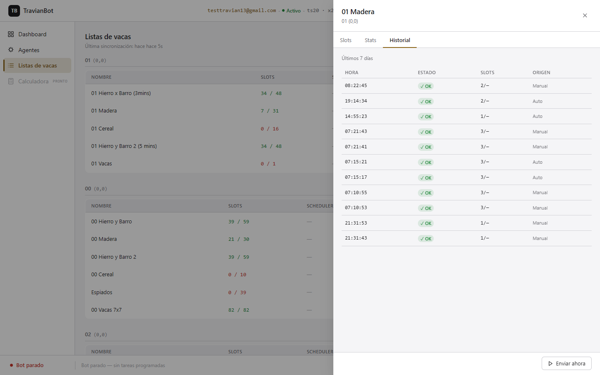
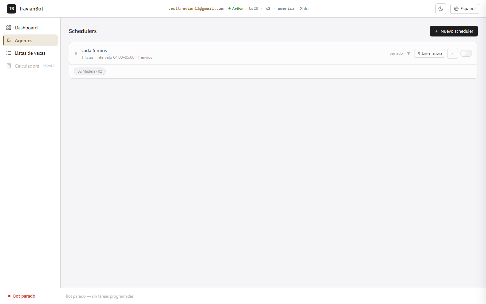

Listas de vacas
Aprende a usar la sección de Listas de vacas del dashboard: cómo leer el estado de tus listas, gestionar vacas individuales, revisar el historial de envíos y configurar schedulers para que el bot envíe automáticamente.
1. Qué son las listas de vacas
En Travian, una lista de vacas (o farm list) es un grupo de aldeas enemigas débiles que el jugador ataca regularmente para robar recursos. Travian permite crear estas listas en la plaza de reuniones y asignar tropas a cada aldea objetivo.
El bot gestiona estas listas de forma automática: las lee desde Travian, las guarda en su base de datos, y las envía periódicamente según la programación que el usuario configure. Además, supervisa el resultado de cada raid: si una aldea empieza a defender y causa bajas, el bot la desactiva temporalmente para proteger las tropas.
2. Cómo acceder a la sección
Las listas de vacas forman parte del espacio de mundo. Para llegar hasta ellas:
En la pantalla de Cuentas, haz clic sobre tu cuenta para ver sus mundos.
Haz clic en el mundo que quieres gestionar. Entrarás en el espacio de mundo.
En el menú lateral izquierdo, haz clic en Listas de vacas.

3. La tabla de listas
La sección Listas de vacas muestra todas las farm lists del mundo, agrupadas por aldea propietaria. Cada fila de la tabla es una lista.

Columnas de la tabla
| Columna | Qué muestra |
|---|---|
| Nombre | El nombre que le diste a la lista en Travian. |
| Slots | Número de vacas activas / total de vacas en la lista. En verde si hay activas, en naranja si hay pocas o ninguna. |
| Scheduler | Nombre del scheduler asignado, o “—” si la lista no tiene scheduler y solo puede enviarse manualmente. |
| Último envío | Hace cuánto tiempo se envió la lista por última vez. “—” si nunca se ha enviado. |
| Rec/Env | Recursos promedio obtenidos por envío (botín medio del último ciclo de vacas activas). |
Haz clic en cualquier fila para abrir el drawer de detalle de esa lista.
4. El drawer: pestaña Slots
Al hacer clic en una lista se abre un panel lateral (drawer) desde el lado derecho de la pantalla. La primera pestaña, Slots, muestra todas las vacas de la lista con su estado actual.

Chips de resumen
En la parte superior de la pestaña Slots hay tres chips:
| Chip | Qué indica |
|---|---|
| Slots activos | Cuántas vacas están activas ahora mismo frente al total. |
| Rec / Envío | Media de recursos que obtiene esta lista por cada envío. |
| Total acum. | Suma total de botín acumulado en los últimos 7 días para esta lista. |
Tabla de slots
Cada fila es una vaca. Las columnas son:
| Columna | Qué muestra |
|---|---|
| Tropas (icono) | Iconos de las tropas asignadas a esta vaca, con su cantidad debajo. El icono corresponde al tipo de tropa de tu tribu. |
| Nombre | Nombre de la aldea objetivo. |
| Dist | Distancia en casillas desde tu aldea. Oculta en pantallas pequeñas. |
| Acum. | Botín acumulado de esta vaca en los últimos 7 días. Oculta en pantallas pequeñas. |
| Botín | Recursos obtenidos en el último raid. El icono de espadas indica el resultado: verde (sin bajas), amarillo (bajas pero victoria), rojo (derrota). |
| Estado | Estado actual de la vaca. Ver sección 8 para el significado de cada estado. |
| ··· | Menú de acciones sobre la vaca. Ver sección 9. |
Ordenar la tabla
Haz clic en la cabecera de cualquier columna ordenable (Nombre, Dist, Acum., Botín, Estado) para ordenar por ese campo. Un segundo clic invierte el orden; un tercer clic vuelve al orden original.
Ver el detalle de una vaca (accordion)
Haz clic en cualquier fila de la tabla para expandirla y ver el detalle completo de esa vaca: último informe de raid, botín promedio, botín acumulado y los botones de acción. Haz clic de nuevo para cerrar.
Si la vaca tiene una sonda pendiente, el detalle muestra además un contador regresivo con el tiempo que queda hasta que el bot la envíe.
5. El drawer: pestaña Stats
La pestaña Stats resume el rendimiento de la lista: cuánto ha producido, cómo se distribuyen los slots entre sus distintos estados y cuáles son las vacas más rentables.

Rendimiento general
| Métrica | Qué mide |
|---|---|
| Botín total acumulado | Suma de todos los recursos obtenidos por esta lista en los últimos 7 días. |
| Media por envío | Botín promedio de las vacas activas en el último ciclo. |
Distribución de slots
La barra de colores muestra en un vistazo qué proporción de las vacas está en cada estado. La leyenda debajo indica el número exacto de slots en cada categoría.
Top slots por botín
Ranking de las 5 vacas que más recursos producen por envío (media). Es útil para identificar las vacas más valiosas y asegurarte de que el bot las mantiene activas.
6. El drawer: pestaña Historial
La pestaña Historial muestra los últimos envíos registrados de esa lista, con la hora, el resultado y el origen (automático o manual).

Columnas del historial
| Columna | Qué muestra |
|---|---|
| Hora | Hora exacta del envío (hh:mm:ss). |
| Estado | OK Envío completado Parcial Algunos slots no pudieron enviarse Error Fallo en el envío |
| Slots | Cuántas vacas estaban raideando en ese envío frente al total disponible. |
| Origen | Auto = disparado por el scheduler. Manual = enviado por ti desde el botón "Enviar ahora". |
Cargar más entradas
Por defecto se muestran los 20 envíos más recientes. Si hay más, aparece el botón Cargar más al final de la lista.
7. Enviar una lista manualmente
Desde cualquier pestaña del drawer, el pie de página tiene un botón Enviar ahora. Al pulsarlo, el bot envía la lista en ese momento, independientemente del scheduler.
Abre el drawer de la lista que quieres enviar (haz clic en su fila).
En la parte inferior del drawer, haz clic en Enviar ahora.
El botón mostrará un indicador de carga mientras el bot se conecta a Travian.
Al terminar aparece un panel de feedback con el resultado del envío: cuántas vacas se han puesto a raidear y si el bot desactivó alguna por pérdidas.
8. Estados de una vaca
Cada vaca puede estar en uno de los siguientes estados, visibles en la columna Estado de la tabla de slots:
| Badge | Estado | Qué significa |
|---|---|---|
| Activa | Activa | La vaca está incluida en el envío. El bot la raidea normalmente. |
| Sonda | Sonda pendiente | El bot la desactivó por pérdidas, el tiempo de cuarentena expiró y aún no llegó ningún informe nuevo. El bot la incluirá brevemente en el próximo ciclo como prueba y la volverá a desactivar. |
| Bot | Desactivada por el bot | El bot la desactivó porque el último raid tuvo bajas. Está en cuarentena hasta que expire el cooldown o llegue un informe limpio. |
| Manual | Desactivada manualmente | Tú la desactivaste en Travian o desde el dashboard. El bot no la toca. |
El cooldown de cuarentena
Cuando el bot detecta pérdidas en una vaca, la desactiva durante 1 hora. Si al reactivarla (sonda) vuelven a producirse pérdidas, el siguiente cooldown es de 2 horas, luego 4, 8, hasta un máximo de 24 horas.
El cooldown se resetea a 1 hora cuando llega un informe limpio (sin pérdidas).
9. Acciones sobre una vaca
Cada fila de la tabla de slots tiene un botón ··· en la columna de acciones. Al pulsarlo se despliega un menú con las opciones disponibles para esa vaca.
También puedes expandir la fila (clic en la vaca) y usar los botones del panel de detalle.
| Acción | Qué hace | Cuándo aparece |
|---|---|---|
| Activar | Activa la vaca en Travian. El bot la incluirá en el próximo envío. | Cuando la vaca no está activa. |
| Desactivar | Desactiva la vaca en Travian. El bot no la tocará (desactivación manual). | Cuando la vaca está activa y no fue desactivada por el bot. |
| Cancelar sonda › Desactivar | Cancela la sonda y deja la vaca apagada indefinidamente como si la hubieras desactivado tú. El bot no la gestionará más. | Cuando la vaca tiene una sonda pendiente. |
| Cancelar sonda › Enviar ahora | Fuerza que la sonda se envíe en el próximo ciclo del bot, sin esperar a que expire el cooldown. | Cuando la vaca tiene una sonda pendiente. |
10. Configurar schedulers
Los schedulers son los temporizadores que envían las listas automáticamente. Están en la sección Agentes del menú lateral.

Crear un scheduler
Ve a Agentes en el menú lateral.
Haz clic en + Nuevo scheduler.
Escribe un nombre descriptivo (por ejemplo: "Madera cada 5 min").
Configura el intervalo mínimo y máximo en minutos. El bot elegirá un tiempo aleatorio entre los dos valores en cada disparo.
Guarda. El scheduler aparece en la lista pero aún no tiene listas asignadas.
Asignar listas de vacas a un scheduler
Haz clic en el menú ··· del scheduler y elige Editar listas.
Selecciona las farm lists que quieres que este scheduler envíe.
Guarda. Las listas aparecen como chips bajo el nombre del scheduler.
Activar y desactivar un scheduler
Cada scheduler tiene un interruptor en el extremo derecho. Puedes pausarlo en cualquier momento sin perder su configuración ni su historial.
Enviar ahora (saltar la espera)
El botón Enviar ahora junto al scheduler adelanta el próximo disparo a este mismo instante. El bot necesita estar arrancado (estado "activo" en la barra inferior).
Arrancar y parar el bot
En la barra inferior del espacio de mundo aparece el estado del bot: Bot parado o Bot activo. Para que los schedulers funcionen, el bot debe estar activo. El botón de la barra permite arrancarlo y pararlo.
Borrar un scheduler
Al borrar un scheduler, las farm lists que tenía asignadas no se borran: solo quedan sin scheduler asignado. Puedes reasignarlas a otro scheduler cuando quieras.
11. Sincronizar desde Travian
El bot guarda las listas de vacas en su base de datos local. Si creas, modificas o borras listas directamente en Travian, esos cambios no se reflejan automáticamente en el dashboard: hay que sincronizar manualmente.
Asegúrate de que el bot está activo y tiene sesión abierta en Travian (indica "Activo" en la barra superior).
Ve a Listas de vacas.
Haz clic en Sincronizar ahora (esquina superior derecha).
El bot navega a la plaza de reuniones, lee todas las listas del DOM de Travian y actualiza la base de datos. Este proceso puede tardar unos segundos.
La fecha de "Última sincronización" bajo el título se actualiza al terminar.
Qué hace exactamente la sincronización
El bot:
- Añade las listas nuevas que aparecen en Travian.
- Actualiza el nombre de las listas existentes si cambió.
- Elimina las listas que ya no existen en Travian.
- Actualiza los slots (vacas) de cada lista, preservando el estado bot (cooldowns, sondas) de las que sigan activas.
TravianBot — Manual de usuario — Farm Lists
Revisión: 2026-05-28